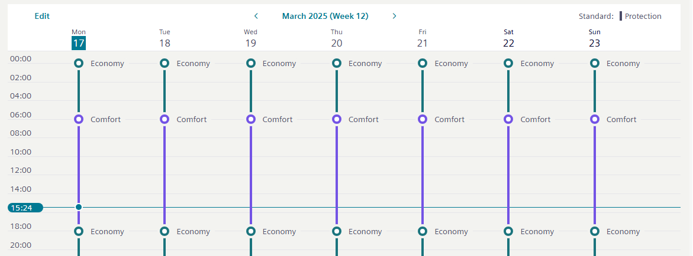
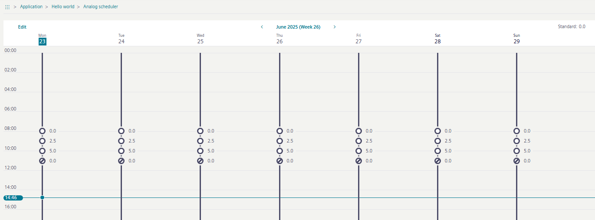
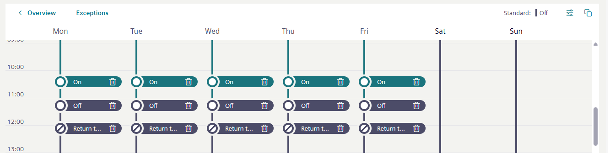
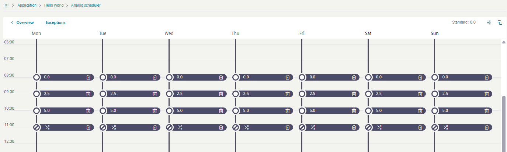
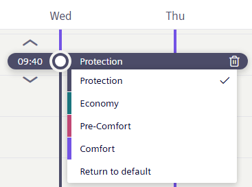

Schedule user interface
The Scheduler view displays by default for the selected scheduler object.
Online view binary or multistate scheduler

Online view analog scheduler

Edit view
The Edit mode allows the modification of time and exception programs.

Scheduler edit mode | |
|---|---|
Overview | Gives a general overview of the selected scheduler object. If you are in Edit mode, the overview button displays. |
Exceptions | Exceptions/scheduler toggle between the scheduler and exceptions Calendar views. Exceptions are used to override the weekly schedule. |
Standard | Shows the current active status of the scheduler output. |
Options | Modifies the schedule default value. |
Copy | Copies the activities from one day to one or several other days in the weekly schedule. |
Work area views
A switching point displays in the work area to indicate the time for a change of value (analog object) or setting (binary or multistate object).
Analog object schedule
- Switching points display the value to which the referenced object(s) will be commanded.
- indicates a switching point that returns to the schedule default.

Binary or multistate object schedule
- The color of the switching point indicates the setting to which the referenced object(s) will be commanded.
- indicates a switching point that returns to the schedule default.

Exceptions Calendar view
A scheduler exception in a BACnet system refers to a special schedule that overrides the normal, recurring schedule. Scheduler exceptions allow you to handle irregular or one-time events that require different control actions or timing.
| Label | Description |
|---|---|---|
1 | Scheduler | Back to the Scheduler view. |
2 | Calendar | Currently selected Calendar view. |
3 | List view | Opens the List view for modifying and copying existing scheduler exceptions. |
4 | Add | Opens the Exception view for new or existing modifications. |
5 | Range | Defines the scheduler exception range:
|
6 | Copy | Copies existing scheduler exception entries to a new data range. |
7 |
| BACnet scheduler objects can handle situations where multiple scheduler exceptions overlap or conflict with each other. To prevent the exception program from being used incorrectly, you must select a priority between 1 and 16, with 1 having the highest priority. Note: This priority is not the same as the BACnet priority of an output object. For this reason, all priorities from 1 - 16 can be used. |
8 |
| Defines the switch-on time for the date exception. |
9 |
| Defines the switch-off time for the date exception. |
10 |
| Shows the selected days which are added by copying the selected exception (paste). |
11 |
| Shows the current day. |
12 |
| Displays the currently selected exception. In this case, from April 19 - 23. |
13 |
| Displays a saved exception. In this case, from April 5 - 8. |
Exceptions List view
The individual functions are described in the previous table.